Copyright (c) 2008 Gerald John Lapeyre Jr.
Permission is granted to copy, distribute and/or modify this document
under the terms of the GNU Free Documentation License, Version 1.2
or any later version published by the Free Software Foundation;
with no Invariant Sections, no Front-Cover Texts, and no Back-Cover Texts.
A copy of the license is included in the distribution of the source
code of the software accompanying this manual in the file fdl.txt.
This quantum information package for the Maxima computer algebra system allows the manipulation of instances of objects-- operators, vectors, tensors, etc. that appear in quantum information theory. More precisely these objects are typically represented in this package in a particular basis as row and column vectors and matrices, whose entries may be explicit numbers (of various classes) or algebraic expressions. This software occupies a niche distinct from high performance numerical linear algebra software as well as software such as the Maxima tensor packages that manipulate abstract mathematical objects. This document describes the functions and data in the package and how to use them with Maxima, assuming that you do not know much about Maxima, but do know quantum information theory. However, most of the examples are also found in introductory texts on quantum information. The package is intended for research and teaching in the theory of entanglement and quantum information and related fields.
Examples of the facilities of the package are
This document begins with a very brief introduction to Maxima emphasizing features that are important for qinf. The remainder of the manual is a series of small sections introducing functions with examples. The examples mostly consist of testing equations. First identities and textbook exercises are presented, in part becuase they are the natural calculations to include in the test suite from which they are taken. Then more complicated calculations are tested, as that is the initial application of the author-- to check hand calculations and claims found in other documents. In this restricted sense, the package can give results on simple abstract statements: If 1) generic instances of objects are generated, and 2) a representation-invariant statement is formulated, and 3) the subexpressions are succesfully coerced into some canonical form, then defects in the statement can sometimes be detected if the statement is not true.
Some suggestions and things to be aware of in the following sections.
Some of the ideas used in this package are inspired by the package qdens written for a proprietary symbolic algebra system. (put reference here)
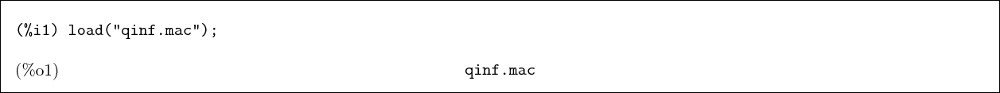
There are several tutorials and manuals available for
Maxima. Here is a very brief one focused on aiding the
introduction to the qinf package. We will not give examples
of matrices until later, but point out that the notation for
matrix multiplication in
Maxima is a dot, eg. A . B. If
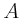 is a 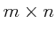 and 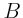 a 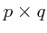 matrix, then the
result is a 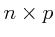 matrix. The inner
product of quantum state vectors, the
outer product of quantum state vectors, the composition of
operators, and the mapping of one vector to another by an
operator are all special cases of matrix multiplication and
are all represented by the dot. The remaining product, the
tensor product, becomes the Kronecker product in the matrix
representation of a finite dimensional Hilbert space. To
agree with standard terminology, we introduce the infix
operator otimes and the function tensor_product
that eventually call the Maxima function
kronecker_product.
Maxima can use exact real and complex numbers or the
standard floating point approximations, or arbitrary
precision floating point numbers. Numerical expressions are
simplified upon entry. Each input line must be terminated by
a semicolon (some interfaces do this automatically) or by a
dollar sign, which suppresses the output.
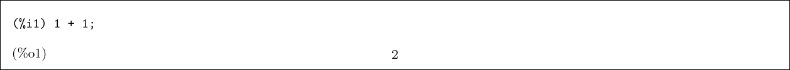
Assignment is denoted by a colon while
function definitions are denoted by
:=
For example, a : b+c ; evaluates b+c and assigns the result to a.
On the other hand a(x,y) := x^y ; defines the function 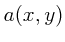.
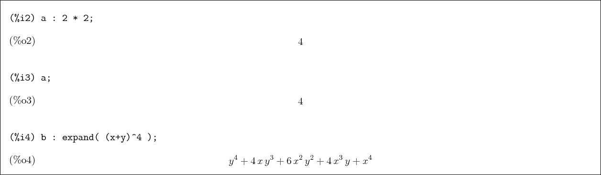
We suppress the output here with a dollar sign because it's big- 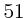 terms.
expand
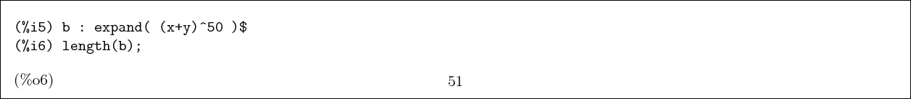
Some exact numbers and floating point approximations.
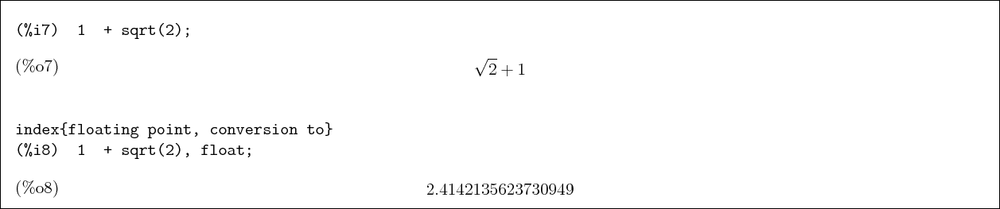
Defining and using a function.
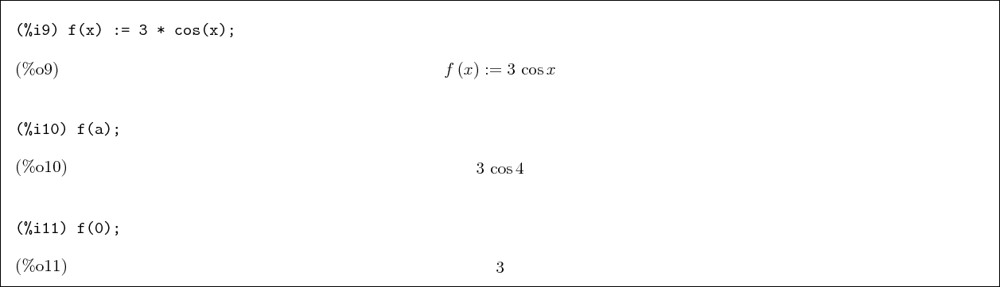
Complex numbers.
%i
is the identifier for
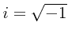.
![\begin{boxedminipage}{2.0\linewidth}
\begin{verbatim}(%i12) expand ( (1 + 2 * ...
...nd{verbatim}
\begin{dmath}[number={\%o12}]
4\*i-3\end{dmath}\end{boxedminipage}](img24.gif)
Some special numbers are defined, such as
%pi
and
%e.
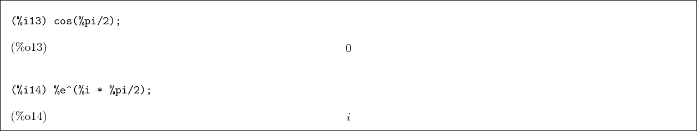
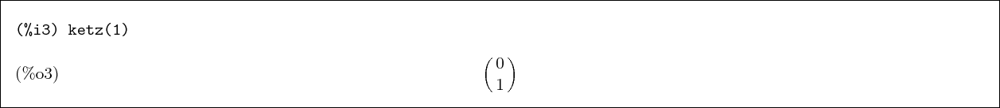
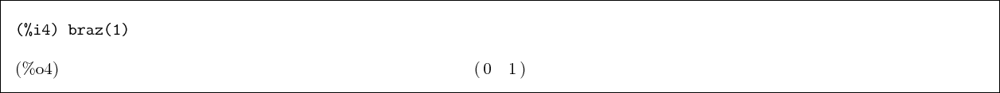
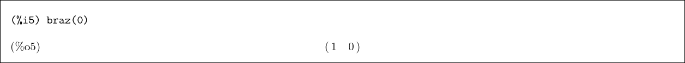
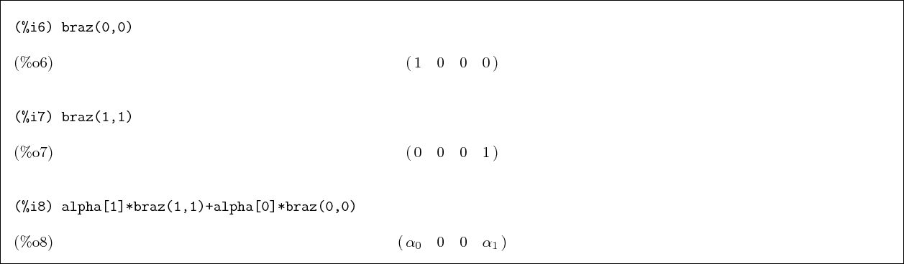
The functions ketx, brax, kety, bray produce
eigenstates of
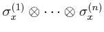,
or
 ,
with, as before, the index selecting the state with eigenvalue and
selecting the state with eigenvalue .
,
with, as before, the index selecting the state with eigenvalue and
selecting the state with eigenvalue .
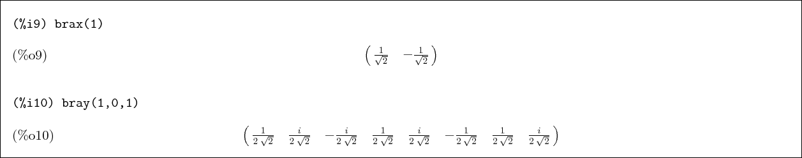
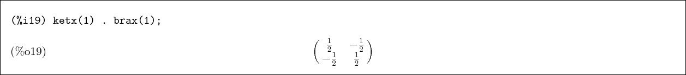
Compare this to the inner product
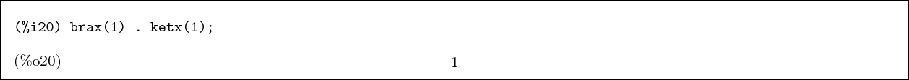
Here are different ways to make
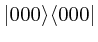 and
 .
.
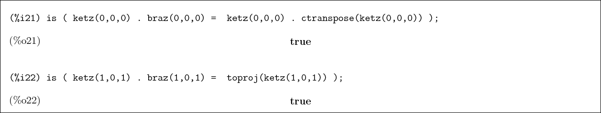
There is also a function tostate (needs a better name) that
is the inverse (up to a phase) of toproj-- it returns the ket corresponding to a
projection operator. If the input matrix is not a projection operator,
the result is undefined.
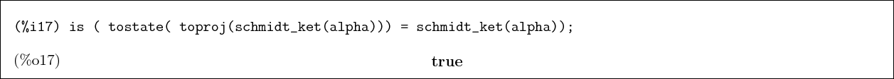
sqrt(a)*ket(0,0)+ sqrt(1-a)*ket(1,1). This
only works for qubits (). Note that you may need to
enter Maxima's assume(a>0,1-a>0) when manipulating this state.
| (1) |
As an exercise, we will check our definitions of the Bell
states by testing for orthonormality. We first define an array
function that returns the inner product of two Bell states.
An array function f[x,y] is like an ordinary function
f(x,y) except that it can be used where an array is
expected.
Create a matrix with Maxima's genmatrix which maps the two
dimension array f over the indices of the matrix with the given range.
But instead of the named function f we could have used
just a function body with Maxima's lambda function,
which returns a function that is not bound to a symbol.
It is obviously the identity matrix. The
function identitymatrixp() is a predicate defined in the
quantum information package in analogy to the Maxima
function zeromatrixp. It returns true only if its
argument is an identity matrix. (The symbol
%
refers to the previous output.
In the following sections, we often perform these comparisons in a single line. This
is how the test appears in the regression test suite.
We see that these four vectors are orthonormal and thus form a basis in
.
We can also check that
| (2) |
Show that the ket
is an eigenvector of with eigenvalue .
Here are we check that all our definitions of the pauli matrices and kets are
consistent in this sense.
Here we use anticommutator() to test the anticommutation relations among
the pauli matrices:
for
The Maxima function mat_unblocker, flattens the
blocks in the above expression, so we can write
Now we load the itensor package, which provides the
levi-civita tensor, and make use of
the Maxima functions permutations (which returns the
set of all permutations of a list) and listify (which turns a set into an ordered list).
The qinf package provides mapapply(
), which applys
func to each of the lists and returns a list of the results.
(see the Maxima documentation for apply.) With all these,
we can test the commutation relations of the pauli matrices. (In reality, the matrix definitions
are not complicated, we are actually testing the other functions.):
.
Now we are ready to introduce features that are more specific to the study quantum entanglement, namely the partial trace ptrace, the von Neumann entropy entropy and purity.
In this example we create three arbitrary matrices, and check that
Here we trace over one component repeatedly and check that the result is
equal to the full trace. Note that, each time, we are tracing over the new
first component.
We see that Maxima is allowing that the quantities under the radicals may be negative. So
we set some rules, and try again.
![\begin{boxedminipage}{2.0\linewidth}
\begin{verbatim}(%i3) assume(alpha>0, 1-a...
...reak[0]0&\linebreak[0]0&\linebreak[0]1-\alpha\cr }\end{dmath}\end{boxedminipage}](img107.gif)
The von Neumann entropy defined as
| (3) |
![\begin{boxedminipage}{2.0\linewidth}
\begin{verbatim}(%i6) entropy(pr);
\end{verbatim}
\begin{dmath}[number={\%o7}]
0\end{dmath}\end{boxedminipage}](img110.gif)
The purity
is equal to if and only if  is a pure state.
is a pure state.
Now we compute the reduced density matrix of the second qubit by tracing over the first--
Tracing over the second qubit instead gives the same result
Computing the entropy of a local state shows that this state is, in general, mixed
Each eigenvalue satisfies
, so that the sum of their squares is less than
one
We
can plot the results (the plot command plot2d is more
common, depending on your user interface. wxplot2d has
the same calling syntax, but inlines the resulting plot.) We
see that the maximum entanglement occurs at and
decreases monotonically from there in both directions, with
giving pure joint states.
Consider a pair of entangled qubits and , and another entangled pair and . By performing a joint measurement on, say and , we can put and in an entangled state although they may be widely separated. We begin by considering the most general projective measure on and , and calculate the reduced density matrix for a single qubit and the probability of outcome. In this example we calculate these quantities two ways-- one, directly from the density matrix formalism, and two, via formulas taking advantage of the particulars of this problem. To do the first calculation by hand would be extremely upleasant, as it involves multiplying matrices with several factors in a single element. Carrying it out below with Maxima is a concise exercise. This may appear to be an empty exercise only because all the calculations agree. In fact, in taking this example from a journal article, the author easily found a typographical error leading to an inconsistent result in one of the formulas below that would have been difficult to track down by hand. At present this example does not continue by discussing the measurements that maximize the resulting entanglement of and .
Qubits and are in the state
We consider the projective measurement , that is
and
. We consider only a single basis vector
here, so we don't use the subscript for Maxima vector name.
We need to use Maxima's declare to declare that
the components are complex.
The state
is normalized, but we don't need to impose that condition in
Maxima at this point.
The inital joint state
is pure and remains
so after the measurment applying
 to qubits and .
But we write the density operator
because we will examine the reduced states, which are mixed.
to qubits and .
But we write the density operator
because we will examine the reduced states, which are mixed.

where conjsimp
(supplied via the Maxima listserv by Barton Willis) replaces with .
The output was suppressed with the trailing dollar sign because the  is
a matrix with large expressions for entries.
The reduced state of qubits and is obtained by tracing out components and
corresponding to qubits and , ie
.
is
a matrix with large expressions for entries.
The reduced state of qubits and is obtained by tracing out components and
corresponding to qubits and , ie
.

Likewise, the reduced state of just qubit is
.
The second method of calculating is as follows.
Considering the following map from
to
 :
:
Then the second calculation of , which we call rho_4a is given by
the following two lines.
Comparing (%o9) and (%o12), we see that the two methods of calculating
the reduced state for qubit after the measurement give the same result, showing that the second
method is correct. Now we compute the probability
 that the state is in fact projected onto
.
that the state is in fact projected onto
.
Finally, we compare this to the trace computed by hand from the expression following (4),
which is given by
| (5) |

This document was generated using the LaTeX2HTML translator Version 2002-2-1 (1.71)
Copyright © 1993, 1994, 1995, 1996,
Nikos Drakos,
Computer Based Learning Unit, University of Leeds.
Copyright © 1997, 1998, 1999,
Ross Moore,
Mathematics Department, Macquarie University, Sydney.
The command line arguments were:
latex2html -show_section_numbers -antialias -image_type gif -font_size 12pt -split 0 qinf.tex
The translation was initiated by John Lapeyre on 2008-08-18